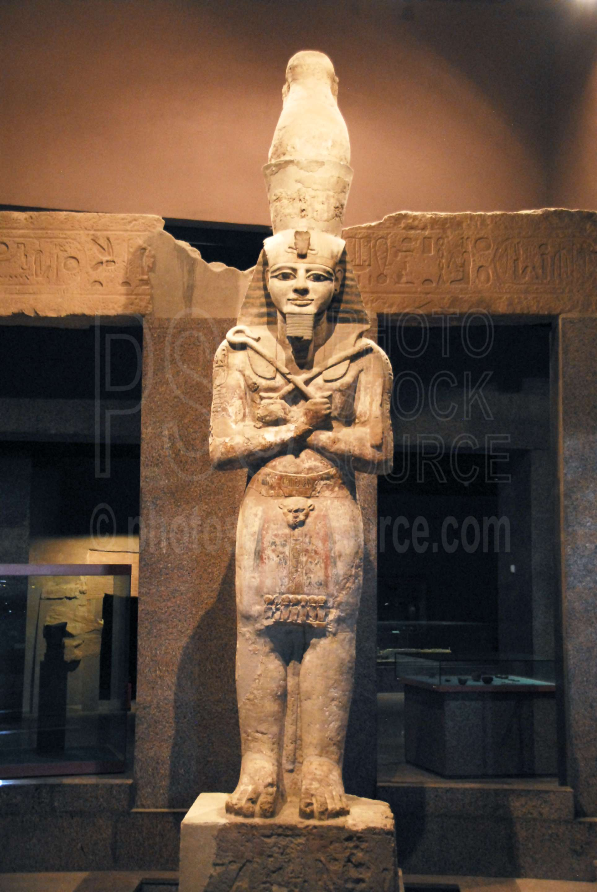
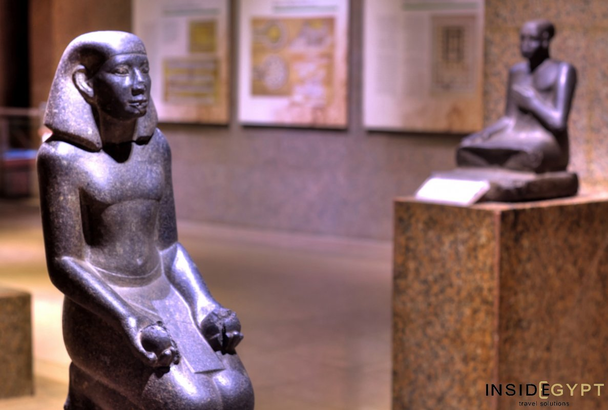
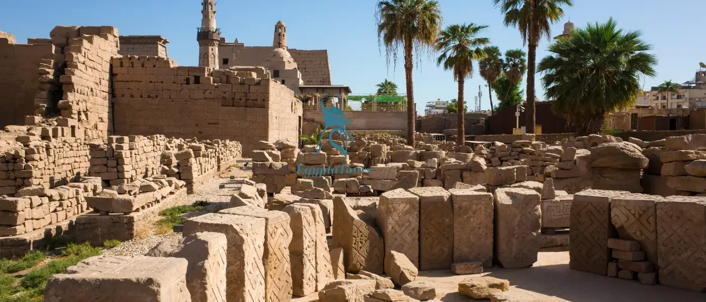

قصة الحفظ
حصن التراث الأسواني
يعد متحف النوبة بأسوان نموذجاً رائعاً للهندسة المعمارية الحديثة التي تستقي إلهامها من الروح النوبية. تم افتتاحه في عام 1997 ضمن الحملة الدولية لإنقاذ آثار النوبة، ويضم آلاف القطع التي تحكي قصة بلاد الذهب منذ ما قبل التاريخ.

تمثال رمسيس الثاني

نماذج الحياة النوبية

الحدائق المتحفية بأسوان
دليل الزيارة
المكان
مدينة أسوان، بجوار حديقة فريال
المواعيد
يومياً من 9 صباحاً حتى 5 مساءً
بوابة التراث النوبي
بوابة تعليمية